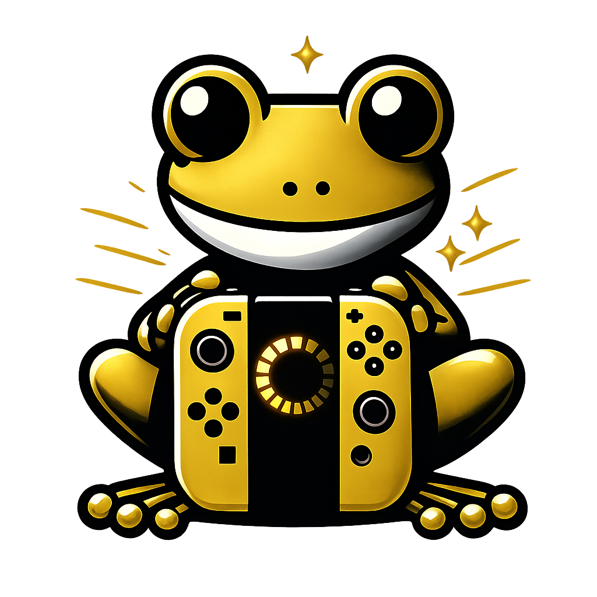

Tu tienda gamer de confianza
Consolas, videojuegos y figuras de colección — nuevos, usados y vintage.
Calidad garantizada, precio justo.
Lo que encontrarás
Nintendo Switch
Consolas, Joy-Cons y juegos. La colección más completa.
PlayStation
PS4, PS5 y títulos para todos los gustos.
Retro & DS
Nintendo DS, Game Boy, Xbox y consolas clásicas.
Anime & Figuras
Figuras de Dragon Ball y coleccionables de edición limitada.
¿Por qué elegirnos?
Cada producto pasa por revisión antes de venderse. Sin sorpresas.
Hablás conmigo directamente, sin bots. Respuesta rápida por WhatsApp.
Opciones de entrega local y envío. Coordinamos lo que te sea más cómodo.
Cientos de ventas en Facebook Marketplace. Clientes reales, reseñas reales.
Hablemos
Escribime directamente por WhatsApp y te digo disponibilidad, precio y cómo coordinamos. Sin vueltas, sin formularios.